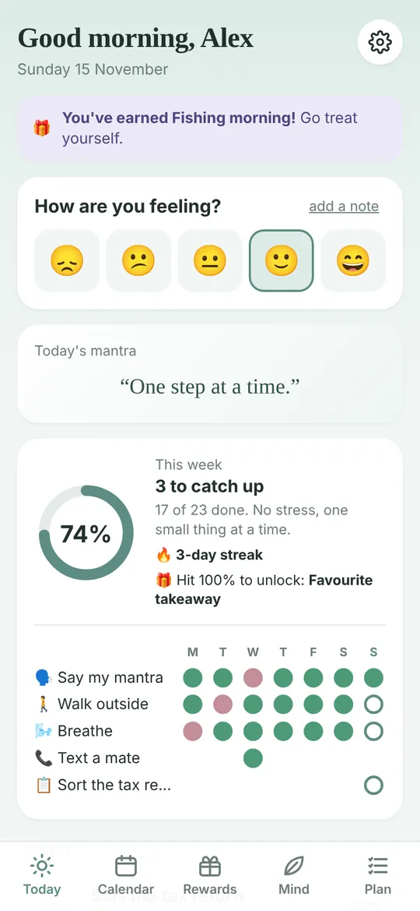
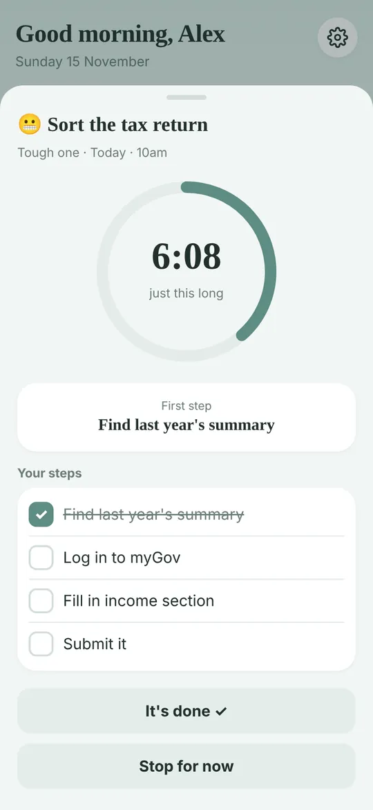
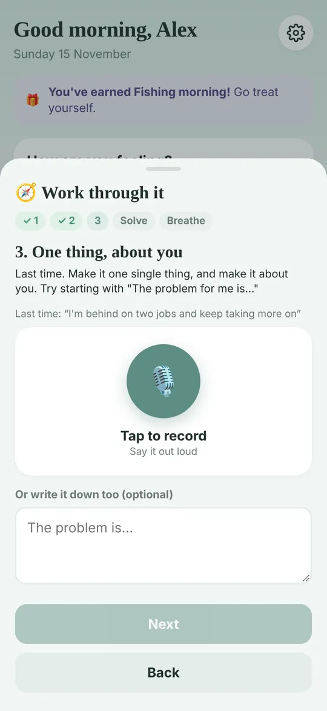
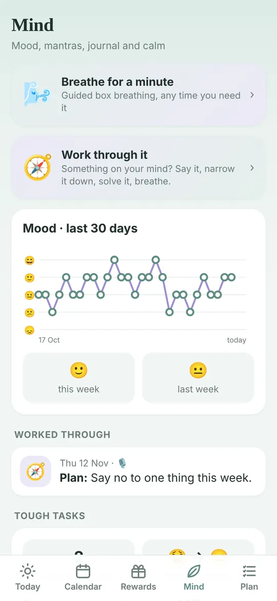
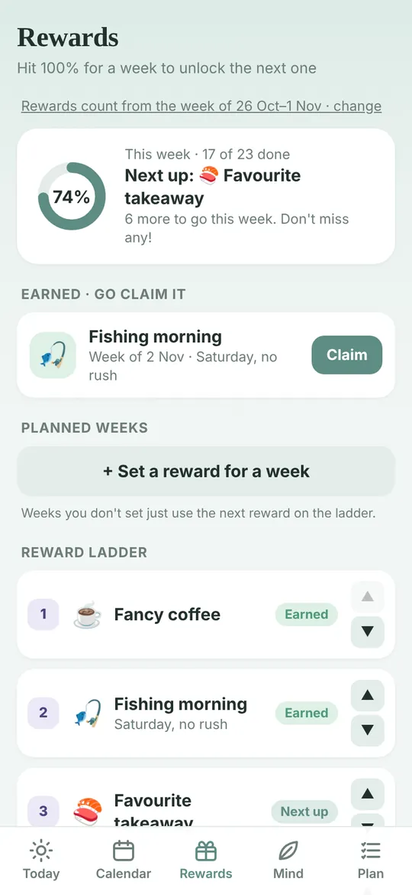

A free, calm Android app for the stuff that keeps slipping: daily habits, gentle reminders that don't give up, and real help getting the tasks you've been dodging done.
Download for Android
I built Steady because the usual to-do apps either nag like a drill sergeant or get ignored after a week. This one's gentle, but it keeps showing up.
If you haven't ticked it off, it nudges again every 30 minutes, kindly. Swipe it away and it still comes back. Snooze when you need to.
Flag a task you're dreading. Steady helps you name what's hard, shrink it to one tiny first step, and do just 10 minutes. Stopping still counts as progress.
On rough days, say the problem out loud three times, each time narrower. Then find one thing you can do, then breathe. Your recordings stay on your phone.
One tap a day. See your mood over the last 30 days, and spot what actually helps.
A mantra on your home screen every morning, and a guided breathing circle whenever you need a minute.
Make a ladder of treats. Every week you tick everything off, you unlock the next one. Save them up if you like.
Starting a business, a renovation, sorting out your health. Break it into steps, keep notes, screenshots and PDFs in one place, and chip away at your own pace.
We all get used to the good stuff. A quick weekly check helps you notice when it's fading, with short exercises to see it again.
Today's list and your month at a glance, right on your home screen. Tap a day to see what's on.




Your headspace is your business. Steady doesn't have a server, so there's nowhere for your data to go.
Steady isn't on the Play Store (yet), so you install it straight from here. It takes about a minute.
Updating later? Download the new version and install it over the top. All your data stays.
Yes. No ads, no subscription, no "premium". I made it for myself and figured it might help someone else.
It's reasonable to be careful. Steady's full source code is public on GitHub, so anyone can see exactly what it does. It only asks for notifications, alarms (for on-time reminders), and the camera and microphone when you choose to use them.
Not yet, sorry. It's Android only for now.
Go to Settings, then Backup, and save a backup file somewhere safe (Google Drive, email it to yourself, etc.). On the new phone, install Steady and choose Restore from backup.
No. Steady is a self-help tool for building habits and looking after yourself day to day. It's not medical advice and doesn't replace a GP, psychologist or medication. If you're struggling, please talk to someone. The Mind tab has free support lines for your country.
Lovely. Open an issue on GitHub and I'll take a look.